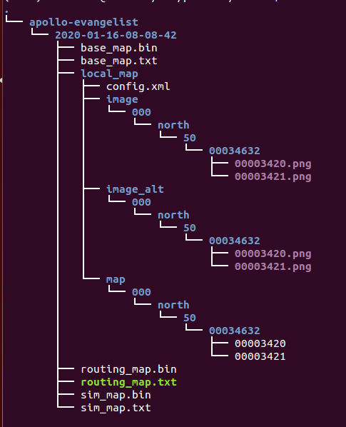

封闭园区自动驾驶搭建–虚拟车道线制作¶
前提条件¶
主要步骤¶
虚拟车道线数据包录制¶
将想要自动驾驶的区域提前按要求录制数据包，作为后面生成虚拟车道线的输入数据，注意目前限制数据包大小不要超过5G。
需要的channel信息如下所示：
序号 |
topic |
|---|---|
1 |
/apollo/localization/pose |
2 |
/apollo/sensor/gnss/odometry |
3 |
/apollo/sensor/gnss/ins_stat |
4 |
/apollo/sensor/lidar16/compensator/PointCloud2 |
为获取上述
channel，需要启动GPS、Localization、Velodyne三个模块，GPS、Localization模块的启动请参考定位模块配置文档，Velodyne模块的启动请参考感知传感器集成文档。由于GNSS设备的限制，/apollo/sensor/gnss/odometry、/apollo/sensor/gnss/ins_stat这两个channel不能由GNSS设备直接给出，需要借助/apollo/modules/tools/sensor_calibration/下的两个脚本工具。在localization模块正常启动且输出/apollo/localization/pose数据时，在不同终端分别执行python modules/tools/sensor_calibration/ins_stat_publisher.py、python modules/tools/sensor_calibration/odom_publisher.py两个命令，便可以分别产生/apollo/sensor/gnss/ins_stat、/apollo/sensor/gnss/odometry这两个channel。为了节省数据空间，这里建议用户在docker环境使用命令行录制数据包，不要使用
Recorder模块录制，录制命令如下
cyber_recorder record -c /apollo/localization/pose /apollo/sensor/gnss/odometry /apollo/sensor/gnss/ins_stat /apollo/sensor/lidar16/compensator/PointCloud2
注意：在执行sensor_calibration/ins_stat_publisher.py脚本前，请务必检查/apollo/sensor/gnss/best_pose中GPS信号质量，确保GPS信号质量为NARROW_INT时，才可以使用ins_stat_publisher.py脚本。在录制数据前，应首先确保modules/localization/conf/localization.conf文件中的enable_lidar_localization设置为false，待地图制作完成后如果需要msf定位，再修改为true。
使用虚拟车道线云服务生成虚拟车道线¶
1. 上传数据至BOS¶
注意： 必须使用在Dreamland中提交用户账号信息的 Bos bucket，确认Bos容器名、Bos服务区域、Bos访问秘钥、Bos访问私钥正确。
在BOS bucket中新建目录virtual_lane，作为后续云标定服务读取数据的Input Data Path，把前面录制的数据包以及lidar_GNSS外参文件拷贝至该目录。目录结构如图所示：
2. 提交虚拟车道线生成任务¶
点击左侧菜单栏的「Apollo Fuel」里的「任务」菜单项，进入任务管理页面，点击新建任务按钮，在弹出的下拉框中选择虚拟车道线服务，如下图所示：
填写输入数据路径（在本例中为”virtual_lane”）、输出数据路径（地图生成路径此例中为”result”）、区域编号（根据当地实际情况填写，本例中所在地方为北京应填50）、雷达类型（是配置的/apollo/sensor/lidar16/compensator/PointCloud2这个channel的雷达类型，此例中是lidar16）、车道宽度(车道线的宽度，此例中为3.3)、额外ROI拓展(车道线的边界到真实道路边缘的距离，此例中为0.5)，最后点击提交任务按钮提交。 注意：bos需要有写权限,并且传入的区域编号应和录制数据包时localiztion.conf配置文件中的local_utm_zone_id配置项的值一致才行。
3. 获取虚拟车道线并添加到apollo中¶
任务完成后，将在注册的邮箱中收到一封邮件：

如果邮件内容为上图所示则表示虚拟车道线成功生成，查看bos上的Output Data Path（此例中为result），此path的目录结构如下图所示：

将上图中的2020-01-16-08-08-42整个文件夹拷贝到/apollo/modules/map/data/下，重命名为自己的地图名字（例如gongyuan），重启DreamView即可在地图下拉框中看到自己刚添加的地图。
NEXT¶
现在，您已经完成虚拟车道线制作，根据您使用的是基于Lidar的感知方案还是基于Camera的感知方案，接下来可以开始基于激光雷达的封闭园区自动驾驶搭建–感知适配或基于摄像头的封闭园区自动驾驶搭建–感知适配
常见问题¶
1. 在BOS中没有生成local_map文件夹¶
确认/apollo/modules/localization/conf/localization.conf文件中
--local_utm_zone_id选项和提交虚拟车道线云服务的时传入的zone_id一致。
2. 在BOS中生成的地图有问题¶
在虚拟车道线数据包录制过程中，车只能沿着预定道路走一遍且不能闭环。
3. 在BOS没有生成任何地图数据¶
确认提交账号时给的BOS信息正确。